Nada por aquí. Prueba con otra palabra.Nothing here. Try another word.
EspectadorSpectator
Mi obra completa es el camino de ida: lo que hago y le mando al mundo. Esta página es el de vuelta: lo que el mundo me manda a mí y se queda. Películas, poetas, palabras, libros, personas, momentos del día. Listas por orden de preferencia, que pueden cambiar.
My obra completa is the way out: what I make and send to the world. This page is the way back in: what the world sends to me and stays. Films, poets, words, books, people, times of day. Lists in order of preference, which may change.
I · Pantalla y papelScreen and page
Películas favoritasFavourite films
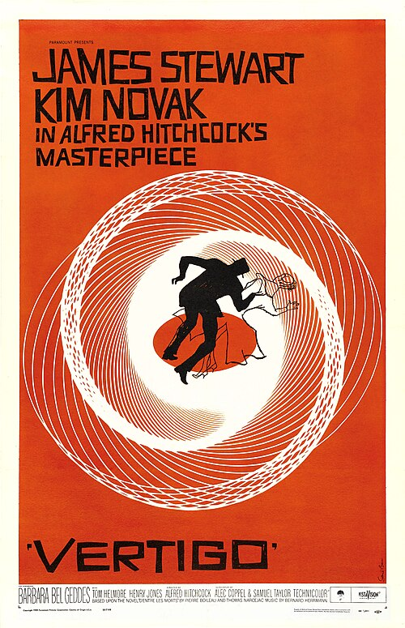
VértigoVertigo

Pulp Fiction
Series favoritasFavourite series
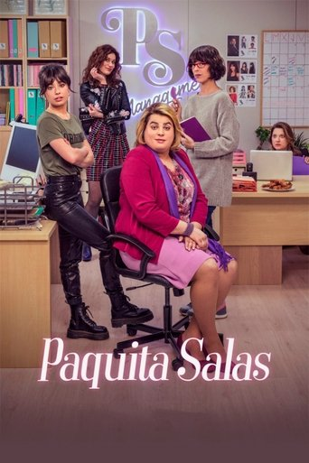
Paquita Salas
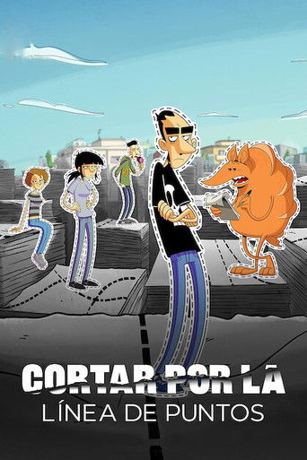
Cortar por la línea de puntosTear Along the Dotted Line
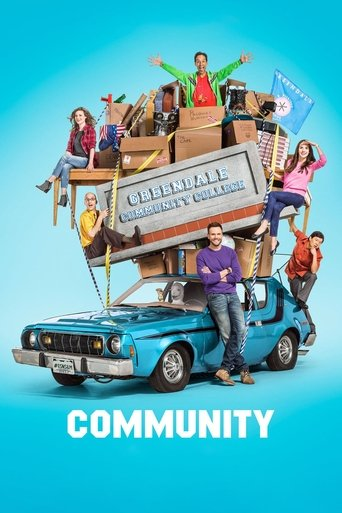
Community
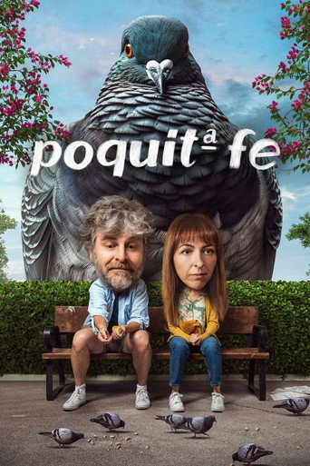
Poquita fe
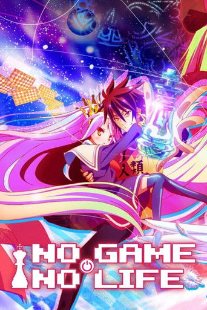
No Game No Life
The Office
Libros que fueron mis favoritosBooks that were once my favourite
- 2015 El mundo de SofíaJostein Gaarder
-
2018febreroFebruary
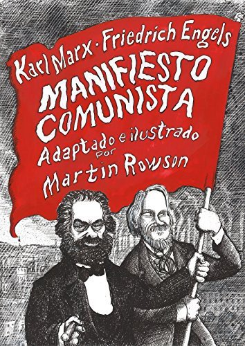
El manifiesto comunistaKarl Marx yand Friedrich Engels - 2018junioJune La metamorfosisFranz Kafka
-
2019veranosummer
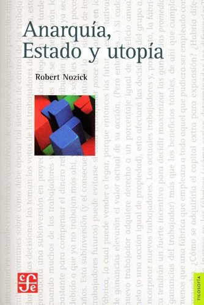
Anarquía, Estado y utopía provisionalRobert Nozick -
2026abrilApril
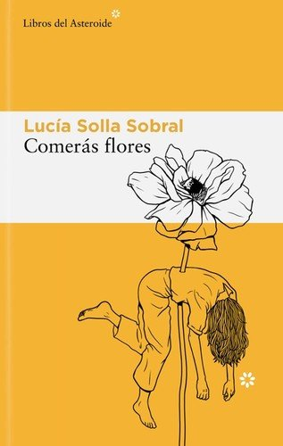
Comerás floresLucía Solla Sobral -
2026junioJune
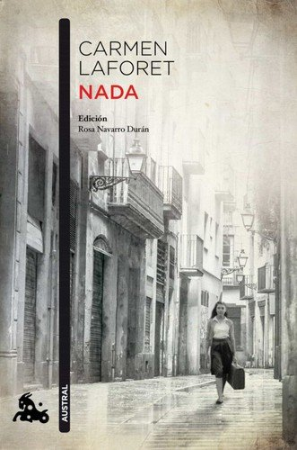
NadaCarmen Laforet -
2026septiembreSeptember
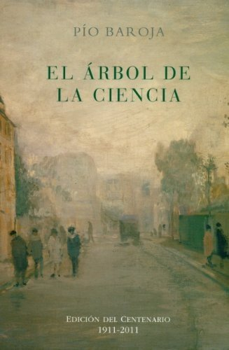
El árbol de la cienciaPío Baroja
PoetasPoets
Jorge Manrique
Rubén Darío
Miguel Hernández
Blas de Otero
Chantal Maillard
AnónimoAnonymous
Arcipreste de Hita
Garcilaso de la Vega
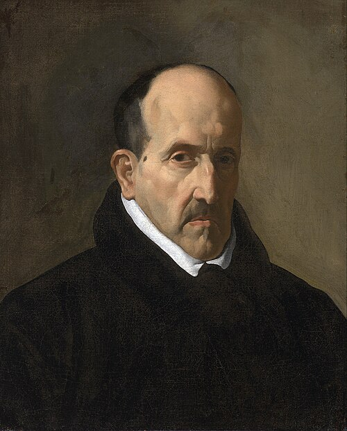
Góngora
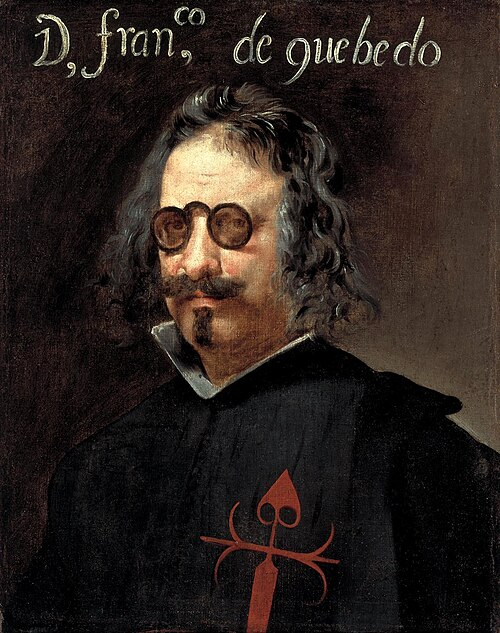
Quevedo
Lorca
Bécquer
Juan Ramón Jiménez
Sylvia Plath
II · OídoEars
Canciones que fueron mis favoritasSongs that were once my favourite
En algún momento de mi vida, cada una de estas fue la canción: la del mes, o la de una semana que me obsesionaba. Toca una para escucharla.At some point in my life, each of these was the song: the song of the month, or of a week I was obsessed with it. Tap one to listen.
- #5
- #4
Artistas favoritosFavourite artists
Mis canciones de cada uno, en orden. Toca una para escucharla.My songs by each of them, in order. Tap one to listen.

2
 mvrk
mvrk


mvrk
La fe que me tengas
PÓRTATE BIEN!
3
 Amaia
Amaia

Amaia
Cuando no sé quién soy álbum clavekey album
4
 Jaloner
Jaloner
JalonerIII · LenguaTongue
Palabras favoritasFavourite words
Estrofas favoritasFavourite stanzas
¿Cuántas conocías ya?How many did you already know?
- sonetosonnet
- décima
- lira
- coplas manriqueñasManrique stanzas
- romanceromance (ballad)
- cuaderna vía7 + 7A↑cesuracaesura7 + 7A↑↑hemistiquioshemistichs7 + 7A7 + 7A
Números favoritosFavourite numbers
- 1
- 2
- 3
- 4
IV · Tiempo y lugarTime and place
Momentos del díaTimes of day
FavoritosFavourite
- Crepúsculo náuticoNautical twilight
- Crepúsculo civilCivil twilight
- Hora doradaGolden hour
Antifavoritos*Least favourite*
- Justo antes de comerRight before lunch
- Justo antes de justo antes de comerRight before right before lunch
- Justo antes de cenarRight before dinner
* Si un momento favorito y uno antifavorito suceden a la vez, prima el favorito.* If a favourite and a least favourite moment happen at the same time, the favourite wins.
Siluetas de país favoritasFavourite country silhouettes
1
República Democrática del CongoDemocratic Republic of the Congo
2
CroaciaCroatia
3
Chile
Ciudades favoritasFavourite cities
Ciudad de MéxicoMexico City
Montreal
Barcelona*
* No temas, Madrid no cuenta, no puede contar, soy de Madrid.* Don't worry, Madrid doesn't count, it can't count, I'm from Madrid.
Ciudades a las que quiero irCities I want to visit
Buenos Aires
Vigo
Cádiz
Nueva OrleansNew Orleans
V · IdeasIdeas
IdeasIdeas
no me convencenot convincedlo tengo claroI'm sureconfianza en que es verdad y me parece bien · el centro es indiferenciaconfidence that it's true and right · the middle is indifference
La misma hora en todo el mundoThe same time all over the world
En todo el mundo deberían ser las 7:00, o las 19:00, a la vez, siempre en formato de 24 horas, y ya culturalmente entenderíamos a qué hora se come en cada sitio. Tener distintas zonas horarias no supone ningún beneficio.It should be 07:00, or 19:00, everywhere in the world at once, always on the 24-hour clock, and culturally we would already understand when people eat in each place. Having different time zones brings no benefit.
Constitución 2.0Constitution 2.0
Mis opiniones, por cómo son, por cómo me llegan, por cómo las pienso y por cómo me he criado, muchas veces me llegan desde una visión de la política española.My opinions, because of what they are, how they reach me, how I think them through and how I was brought up, often come to me from a Spanish political point of view.
En ese contexto, la Constitución española se debería actualizar. En 2028, a los 50 años de la de 1978, me gustaría un proyecto de constitución nueva: una Constitución 2.0, una democracia v.2.In that context, the Spanish Constitution should be updated. In 2028, fifty years after the one of 1978, I would like a project for a new constitution: a Constitution 2.0, a democracy v.2.
RegularizarRegulate
Más control como sociedad sobre lo que pasa en los barrios, con prevención y dando poder a la gente, sabiendo que siempre habrá quien se aproveche. Por ejemplo, sin ser una lista cerrada:More control, as a society, over what happens in the neighbourhoods, with prevention and by empowering people, knowing that someone will always take advantage. For example, and the list is not closed:
- prostituciónprostitution
- pornografíapornography
- estupefacientesdrugs
- casas de apuestasbetting shops
En un mundo ideal todo esto sería legal: cada persona sería tan libre, autónoma y capaz que sus decisiones serían legítimas por el hecho de tomarlas. Prohibir algo que allí estaría bien necesita muy buenas razones, y eso se decide mirando los datos: si prohibir la prostitución fuera la única manera de acabar con la trata, habría que hacerlo.In an ideal world all of this would be legal: everyone would be so free, autonomous and capable that their decisions would be legitimate just by being made. Banning something that would be fine there needs very good reasons, and that is decided by looking at the data: if banning prostitution were the only way to end trafficking, it would have to be done.
«Al mercado no se le interviene salvo por buenos motivos.»“The market is not intervened except for good reasons.”
Créditos de las imágenesImage credits
- Carteles de Origen, Vértigo y Pulp Fiction: Wikipedia / Wikimedia.Posters of Inception, Vertigo and Pulp Fiction: Wikipedia / Wikimedia.
- Carteles de las series: The Movie Database (TMDB).Series posters: The Movie Database (TMDB).
- Portadas de los libros: Open Library.Book covers: Open Library.
- Retrato de Pío Baroja y fotos de ciudades: Wikimedia Commons.Portrait of Pío Baroja and city photos: Wikimedia Commons.
- Retratos de poetas: Wikimedia Commons, en dominio público salvo Miguel Hernández (UNED, CC BY 2.0), Blas de Otero (Manuel María Fernández Gochi, CC BY-SA 4.0, recortada) y Chantal Maillard (Martina Chenowitz, CC BY-SA 4.0, recortada). No se conserva ningún retrato del Arcipreste de Hita: en su carta va un juglar de las Cantigas de Santa María (códice de los músicos, siglo XIII, dominio público).Poet portraits: Wikimedia Commons, public domain except Miguel Hernández (UNED, CC BY 2.0), Blas de Otero (Manuel María Fernández Gochi, CC BY-SA 4.0, cropped) and Chantal Maillard (Martina Chenowitz, CC BY-SA 4.0, cropped). No portrait of the Arcipreste de Hita survives: his card shows a minstrel from the Cantigas de Santa María (musicians' codex, 13th century, public domain).
- Fotos de artistas, carátulas y reproductores: Spotify.Artist photos, cover art and players: Spotify.
- Siluetas de países: Natural Earth (dominio público).Country silhouettes: Natural Earth (public domain).
- Los extractos de libros pertenecen a sus autores y editoriales; se citan como fragmentos.The book excerpts belong to their authors and publishers; they are quoted as fragments.
Para míFor me
Ya que has recorrido todo este camino tan personal: aquí hay algunos recordatorios para mí mismo.Since you have come all this personal way: here are some reminders to myself.
Objetivos de 2026Goals for 2026 abiertoopen
Me los puse en julio de 2026. Ser más…I set them in July 2026. To be more…
InfantilChildlike
Disfrutar más del juego y de las situaciones con inocencia. Hacer más el tonto.Enjoy play more, and enjoy situations with innocence. Fool around more.
TrabajadorHard-working
No necesariamente productivo; no nos medimos por resultados, sino por esfuerzo. Buscar el modo difícil.Not necessarily productive; we don't measure ourselves by results, but by effort. Seeking out hard mode.
ReflexivoReflective
Muchas veces es mi manera de vivir el presente. Y me gusta cómo pienso.It is often my way of living in the present. And I like the way I think.
PerdidoLost
Disfrutar del proceso de búsqueda, ilusionarme por nuevas y mejores verdades y aceptar la incertidumbre.Enjoy the search, get excited about new and better truths, and accept uncertainty.
Estado de felicidadHappiness level
LVL10/10
Filosofía de vidaPhilosophy of life
A lo largo de los últimos años he identificado varios conceptos universales que han vertebrado mi filosofía de vida en distintas etapas.Over the last few years I have identified several universal concepts that have been the backbone of my philosophy of life at different stages.
-
2020
TrascenderTranscend
Ir más allá: la idea fundamental. Hacer que mi obra perdure, no quedarme en el ahora, perdurar. Rendimientos crecientes a escala.Going further: the fundamental idea. Making my work last, not staying in the now, enduring. Increasing returns to scale.
-
2022
Dar la caraFacing up
Dar la cara en los momentos (y medianamente) difíciles.Facing up in the (even moderately) difficult moments.
-
2023
Fluir o influirFlow or influence
El dilema entre fluir e influir.The dilemma between flowing and influencing.
-
2026
Vivir a rachasLiving in streaks
Entiendo la vida no como una línea continua de rendimiento uniforme, sino como momentos de intensidad, foco o creatividad que se navegan por oleadas y que deben aceptarse sin culpa cuando bajan.I see life not as a continuous line of uniform performance, but as moments of intensity, focus or creativity that are navigated in waves and should be accepted without guilt when they ebb.
-
·
Desde dentro y desde fueraFrom inside and from outside
Estar en la misma con mis colegas. El gran problema de la conciencia.Being in the same boat as my mates. The hard problem of consciousness.
Ídolos de 2026Idols of 2026
- Marcos, amigo gallego del SigfreGalician friend of Sigfre's
- Miguel, ¿quién?who?
- El teatroThe theatre, personificado en Etienne, Miguel y Karlapersonified by Etienne, Miguel and Karla
- Jimbo
- Alba